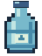

H₂O · HIDRATAÇÃO ORGANIZADA
Plantão do Garrafão.
Porque o laboratório também precisa de água para produzir café.

QUEM SALVA A HIDRATAÇÃO?
20 LPOR COTACarregando…
Missão: não deixar o laboratório virar uma uva-passa.
A FILA DO H₂O
De quem é o próximo garrafão?
1 cota = 1 garrafão de 20 litros. Duas cotas cobrem duas rodadas.
SUA PARTE NO EXPERIMENTO
Já trouxe o seu?
Carregando sua participação…
Minhas solicitações
Administração da água
Participantes da água
Escolha quem participa deste rodízio. Ao retirar um perfil, suas entregas e rodadas adiantadas ficam guardadas.
Ajustar a ordem da fila
Use Subir e Descer para escolher quem fica na vez. O ajuste manual tem prioridade na ordem; as cotas registradas continuam guardadas.
Entregas para confirmar
HERÓIS QUE SALVARAM O MIGUEL DE TER MAIS UMA PEDRA NO RIM